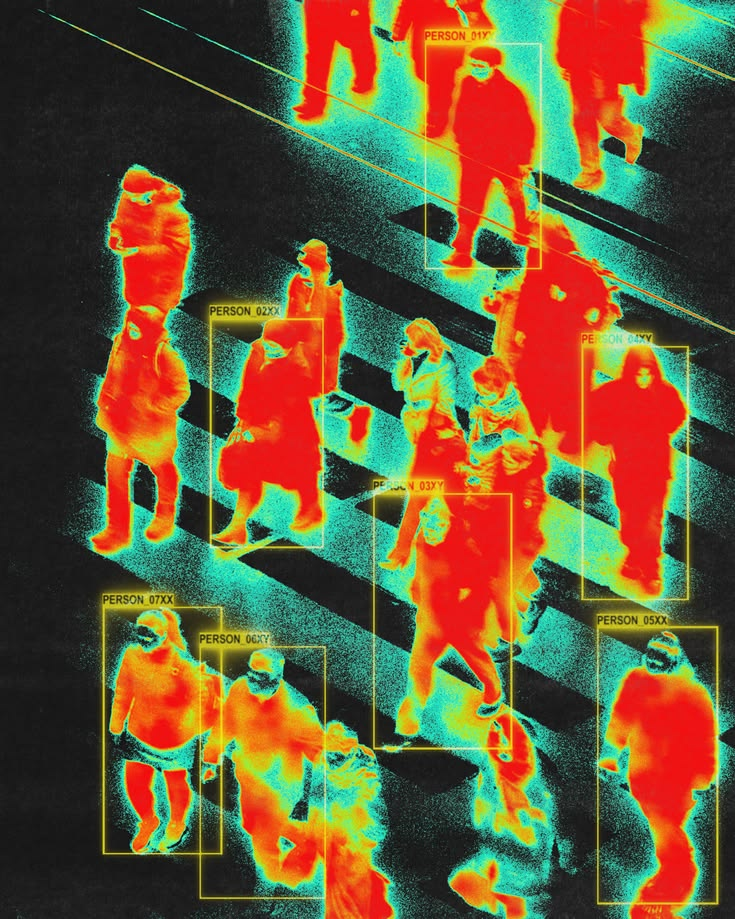
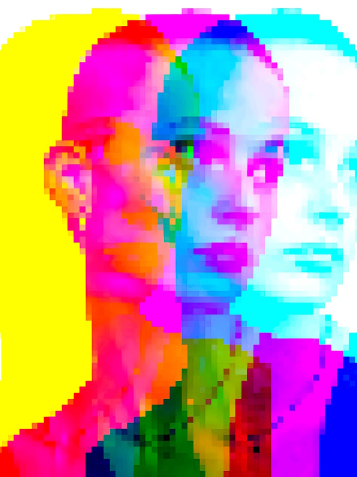

Lab
The engine that draws the rest of this site, pointed at two images I keep coming back to. Move across an image to look through the text at the original.
Heat map
A crowd on a crossing in thermal colors, with its detection boxes. Brighter heat becomes denser characters.

Ghost portrait
A pixelated portrait printed three times in offset colors. White counts as empty paper here, so the palest face fades out.

The crystal, up close
The quartz point from the home page. Drag it to turn it, or change how many sides it has.